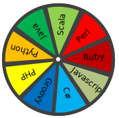

Soutìž v programování – 28. roèník
Krajské kolo 2013/2014
Úlohy mùžete øešit v libovolném poøadí a samozøejmì je nemusíte vyøešit všechny. Za každou úlohu mùžete dostat maximálnì 10 bodù, z nichž je vìtšinou 9 bodù vyhrazeno na ohodnocení funkènosti programu, jeho shody se zadáním a efektivity a jeden bod na dokumentaci a pøehlednost zdrojového kódu. Body získané za každou úlohu se ještì násobí koeficientem, který odráží složitost úlohy.
Na øešení úloh máte 4 hodiny èistého èasu.
Pøed zahájením soutìže vám poøadatel oznámí, kde najdete testovací soubory.
Naprogramujte aplikaci simulující „Kolo štìstí“. Program dovolí do vstupního pole zadat nìkolik øádek textu. Text na jednotlivých øádkách pak zobrazí v kruhových výseèích rozdílných barev. Následnì program umožní uživateli kolo „roztoèit“ – kolo se pak zastaví na náhodnì zvolené výseèi a oznaèí ji. Kolo pùjde roztáèet opakovanì. Snažte se, aby pohyb kola vypadal realisticky.
Pøíklad 1. Pøíklad vstupu a vykreslení kola štìstí
Vstup: Javascript | Ukázka vykreslení kola štìstí 
|
Vaším úkolem je simulovat závody šnekù. Jak takový závod probíhá? Šneci nestartují všichni z jedné startovní èáry, ale jsou umístìni do závodištì podle své výkonnosti (slabší dostanou náskok), aby byl závod napínavý. Po odstartování se každý šnek zaène pohybovat svojí stálou rychlostí smìrem vpøed. Závodí se pøesnì daný èas, po jeho uplynutí se urèí poøadí tak, že vyhraje šnek který dolezl nejdále, následuje druhý a tak dále.
A co má tedy dìlat váš program? Na vstupu dostane text popisující startovní podmínky závodu – na první øádce je jediné èíslo urèující délku závodu v sekundách. Každá další øádka pøísluší vždy jednomu starujícímu šnekovi a obsahuje dvì èísla oddìlená mezerou. První èíslo na øádce urèuje startovní náskok šneka (vzdálenost v milimetrech od pomyslné startovní èáry smìrem do cíle), druhá pak rychlost šneka (mm/s). Startovní èíslo je dáno poøadím v souboru, první šnek má startovní èíslo 1. Text popisující startovní stav bude programu zadán do textboxu èi obdobé grafické komponenty. Pokud pracujete v prostøedí, kde odvyklým vstupem je textový standardní vstup, mùžete použít i ten.
Vaším úkolem je ze zadných vstupních podmínek (vstupního textu) spoèítat poøadí šnekù pøi ukonèení závodu a vzdálenost od startovní èáry. Pokud více šnekù skonèí ve stejné vzdálenosti, bude u nich uvedeno stejné umístìní. Dalším úkolem je zobrazit prùbìh závodu na závodišti jako animaci, umožnìte volbu rychlosti animace.
Pro zjednodušení uvádíme, že v závodu nebude startovat více šnekù než 20, maximální trvání závodu je 3600 sekund, pozice a rychlost šneka je celé èíslo mezi 0 a 10000. Pøípadné neplatné zadání oznamte uživateli, program samozøejme nesmí pøi chybném vstupu havarovat.
Pøíklad 3. Pøíklad výstupu
1.-2. místo šneci èíslo 2 a 4 (500mm) 3. místo šnek èíslo 1 (450mm) 4. místo šnek èíslo 3 (300mm)
Šneèím závodùm nazdar! Zdar!
Racionální èíslo je èíslo, které lze vyjádøit jako zlomek, tj. podíl dvou celých èísel, vìtšinou zapsaný ve tvaru a/b, kde b je rùzné od nuly.
Desetinný zápis racionálního èísla je periodický. V pøípadì koneèného rozvoje – desetinného èísla – tvoøí periodu nuly. Pokud se pøed periodou vyskytuje skupina èíslic, která se neopakuje, nazývá se rozvoj neryze periodický, neopakující se skupina se nazývá pøedperioda.
Vypracujte program pro urèení pøedperiody a periody podílu 1/n pro
maximálnì šestimístné pøirozené èíslo n>1. Vstupní hodnoty naètìte ze souboru zadani.txt,
ve kterém je každé èíslo na samostatném øádku.
Øádky jsou ukonèeny znakem LF.
Program by mìl spoèítat výsledek pro jednotlivá èísla do jedné minuty.
Pøíklad 4. Ukázka výsledku pro vybraná èísla
Vstupní soubor zadani.txt obsahuje následujících pìt
øádek:
2 7 192 11111 12345
Výsledky spoèítané a vypsané programem:
1/2=0.5
pøedperioda: 0.5
perioda: 0
1/7= 0.142857142857142857142857142857142857…
pøedperioda: 0.
perioda: 142857
1/192 = 0.005208333333333…
pøedperioda: 0.005208
perioda: 3
1/ 11111= 0.0000900009000
pøedperioda: 0.
perioda: 00009
1/12345=0.00008100445524503847711624139327663021466180639…
pøedperioda: 0.0
perioda: 00081004455245038477116241393276630214661806399351964358039692
18307006885378695828270554880518428513568246253543944916970433373835560
95585257189145402997164844066423653300931551235317942486836776022681247
46861077359254759011745646010530579181855002025111381125961927906034831
91575536654515998379910895099230457675172134467395706763872012960712839
20615633859862292426083434588902389631429728635074929121101660591332523
28878088294856217091940056703118671526933981368975293641150263264479546
37505062778452814904819765087079789388416362899959497772377480761441879
30336168489266909680032401782098015390846496557310652085864722559740785
74321587687322802754151478331308221952207371405427298501417577966788173
34953422438234102875658161198865937626569461320372620494127176994734710
40907249898744430943701903604698258404212231672742
Strýèek Skrblík je známý držgrešle, který musí mít vždy všeho nejvíc. Dnes ráno uvidìl své synovce, jak si ètou na tabletu knížku, a øíkal si: „To je ale slov, ta všechna chci. Ale vlastnì chudá slova nechci. Chci jenom slova, která jsou úplnì nejbohatší!“ Samozøejmì podle strýèka Skrblíka je nejbohatší to slovo, které se v textu vyskytuje co nejèastìji.
Napište program, který po zadání jména souboru s knihou vypíše tøi nejèastìjší slova, která se v nìm nacházejí. Mùžete pøedpokládat, že všechna tato tøi slova jsou urèena jednoznaènì. Váš program by mìl fungovat co nejrychleji, jinak Skrblík ztratí trpìlivost a moc štìdøe vás za vaši práci neodmìní.
Po spuštìní programu umožnìte zadání jména souboru s knihou.
Soubor s knihou obsahuje pouze malá a velká písmena anglické abecedy,
èíslice, mezery a konce øádku, které jsou reprezentovány znakem
LF. Slovo je posloupnost písmen a èíslic ohranièená
mezerou èi koncem øádku. Dvì slova jsou stejná, pokud se shodují
bez ohledu na velikost písmen.
Soubor s knihou mùže být opravdu veliký – pro dosažení plného poètu
bodù by mìl váš program fungovat i pro soubor délky 100 MB.
Mùžete nicménì spoléhat na to, že jedineèných slov je
v souboru nanejvýš deset tisíc a že každé slovo má délku nanejvýš
tisíc znakù.
Na výstup vypište tøi slova, která se v daném souboru vyskytují nejèastìji (bez ohledu na velikost písmen). Slova vypište od nejèastìjšího po nejménì èasté a u každého vypište poèet výskytù. Mùžete pøedpokládat, že tato slova jsou urèená jednoznaènì.
Soubor s knihou |
Výstup programu |
Jeden Murphyho zakon o programovani Kazdy program obsahuje jeden chybny radek Libovolny program jde zkratit o jeden radek Z toho plyne ze kazdy jeden program jde zkratit na jeden radek ktery je radek chybny |
jeden 5 radek 4 program 3 |